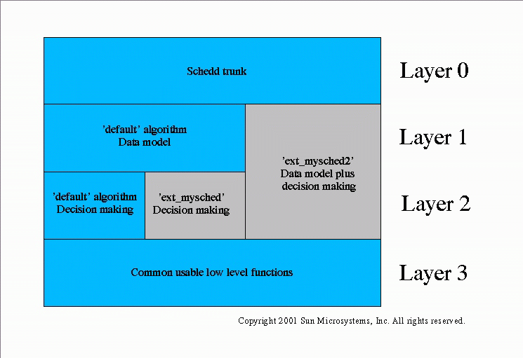

This paper introduces the structure of the Grid Engine scheduling daemon. For additional source code documentation on scheduling questions see also the description of the scheduling library libsched.
The architecture of the scheduling daemon (schedd) is elementarily influenced by the event and order communication scheme between qmaster and schedd. These are the major steps in this communication scheme:
Registration of schedd with qmaster
Schedd initiates communication with qmaster by sending a special GDI (Grid Engine Database Interface) request to the qmaster. This registers schedd as an event client causing the qmaster to send the complete state of everything being relevant for scheduling to schedd. Later on, only state changes need to be passed to schedd.
Schedd waits for status updates of qmaster
A received status update in the for of an event list (see here for information on the type of lists being used) causes schedd to update it's own data and to send an acknowledge to qmaster for the events. It also triggers the next step.
Do a scheduling run
A scheduling run begins with making a copy of the schedd internal data. This is done because this data can now be modified within a scheduling run without changing the state resulting from the event update. Then, beginning with the most important job (see the following sections), the scheduler tries to dispatch all pending jobs to queues and generates a so called order for each of these decisions. Besides these dispatch-orders also some other orders are prepared by the scheduler e.g. to implement the so called suspend_thresholds (see the queue_conf(5) manual page).
Send orders to qmaster
The copy of the scheduler private data is free()'d and the a list of orders is sent to qmaster. Once qmaster has acknowledged the orders, schedd starts over at 2 where schedd will receive events again bringing schedd's data in sync with the newest state at qmaster.
The order in which runnable jobs are dispatched depends on the policy which was selected by the administrator. Grid Engine can be configured to support two different policy modes, one being the so called SGE mode and the other called SG3E or SGEEE mode (the additional EE stands for Enterprise Edition).
In SGE mode the administrator can enable/disable the user_sort parameter in the scheduler configuration (see the sched_conf(5) manual page). With user_sort disabled, the order in which the scheduler examines the jobs is FCFS. With enabled user_sort the job with the lowest amount of already running jobs is selected first and FCFS is in effect only, if two users have the same amount of already running jobs. In both cases the -p priority (see the qsub(1) manual page) overrides FCFS and user_sort/FCFS. An efficient job priorization scheme is implemented in the access tree module. The access tree (see sge_access_tree.c) can be seen as a complex iterator returning the next job each time a new job is needed in the dispatch cycle.
In SG3E mode all jobs receive tickets according to 4 high level policies. The following is just a very brief overview. See the product documentation, in particular the sections about scheduling in the Installation and Administration Guide for more information.
Share tree:
Individual users and projects have relative entitlements in the overall resources of a Grid Engine cluster, so user A might be entitled to receive 30% of all resources while user B might be entitled to 60% and a user C to 10%. Such entitlements are relative and are meant to be granted over time. They are relative in the sense that if user C never uses its 10% share then those 10% are distributed among user A and user B, but in a proportional 30:60 ratio. The granting over time means that Grid Engine tries to achieve the entitlements over a configurable sliding window of time, e.g. over 2 months. Such entitlements are so called long term entitlements. In order to grant them, Grid Engine has to look at the usage of resources which users (or projects) have accumulated in the past and Grid Engine also has to compensate for over- or underutilization of resources as compared to the long term entitlements. Such compensations are done by assigning short term entitlements to the users and projects which can differ from the long term resource allocation.
Long term entitlements are defined in a hierarchical fashion in a so called share tree. The share tree can represent the organizational structure of a site which uses GE in SG3E mode. The leaves of the share tree always are individual projects and/or individual users. The hierarchy level above would be groups of users or projects, then another level above further grouping until the root of the tree which represents the entire organization having access to the cluster.
Functional:
Again, entitlements are defined but based on functional attributes like being a certain user or being associated with a project or a certain user group. The entitlements are static in the sense that Grid Engine does not look at past usage which was accumulated. So there is no need to compensate for under- or overutilization and thus not short term entitlements exist. Functional entitlements represent a kind of relative priority.
Deadline:
Jobs can be submitted with a definition of a deadline. The entitlement of deadline jobs grows automatically as they approach their deadline.
Override:
The automatic policies above can be overridden manually via this policy. It allows, for instance, to double the entitlement which a job (but also an entire project or one user) currently receives. It is also often used to assign a constant level of entitlement to a user, a user group or a project.
The entitlements assigned to a particular job by each of the 4 policies above are translated into so called tickets. Each policy can deliver an amount of tickets to a job for which all those tickets are added together, thereby combining the 4 policies. The job with the highest amount of tickets is investigated by the Grid Engine scheduler first. The -p priority is used as a means for a user to increase the tickets of one job and to decrease the tickets of another one.
Note, that the order in which the scheduler attempts to dispatch jobs (be it in SGE or SG3E mode) often is not identical to the order in which jobs are started. The job with the highest priority, for instance, may not fit on any of the resources which are currently available. Hence the second job in line may get started first. The code handling jobs in priority order can be found in dispatch_jobs() in scheduler.c.
Usually there is more than one queue suitable for a certain job. In SGE mode, the queue_sort_method in sched_conf(5) decides which queue is occupied first. If queue_sort_method is defined to be load, then the queue which resides at the host with the lowest load is selected first. The queue sequence number (seq_no in queue_conf(5)) is then considered only as a second criterion in case two hosts have the same load index. As opposed to this, if seqno is used as queue_sort_method the queue's sequence number is the first criterion and the load index is the second one, considered only if two queues have the same sequence number. In both cases the load_formula in sched_conf(5) specifies how the load index is computed. In SG3E mode a procedure similar to seqno queue sort method is in effect which considers also running jobs when determining the load index. In both modes, SGE and SG3E, a user can override this selection scheme by using so called -soft resource requests (see the qsub(1) manual page). The code handling queue selection order can be found in sge_replicate_queues_suitable4job() in libs/sched/sge_select_queue.c.
The both chapters "Priorization of Jobs" and "Selection of queues" describe the ruleset which is implemented, but they describe not how this is done. The function sge_replicate_queues_suitable4job() implements two different approaches to find the best suited queue(s) with the lowest effort. For straight sequential jobs the first matching queue is fine. For parallel jobs, however, and for jobs with soft requests the scheduler has to be more sophisticated before a decision can be taken which is usually more expensive.
Alternative schedulers can be classified in three different categories and it's worth to become aware of the category of your scheduler, before you start a project:
schedulers which do not support the complete set of Grid Engine features
It is conceivable to have a scheduling algorithm which dispatches certain jobs in a more intelligent fashion, but (at first) it does not support interactive jobs, for instance. Before a scheduler of this category can be used the administrator must be able to assess whether the lack of certain features is acceptable.
schedulers that support the complete Grid Engine features set
All types of jobs, all thresholds and anything else is supported by this scheduler, but in a more intelligent fashion. A scheduler of this category could be activated by the administrator of a site without any need to change anything besides 'algorithm' in sched_conf(5).
schedulers that extend the Grid Engine feature set
While this might be a kind of a change that appears straight forward and free of complications at first sight, you should be aware that enhancing the Grid Engine scheduler with new concepts is in many cases not possible without enhancing the data structures with new parameters. This implies the need for administering these new parameters and usually makes modification in the user interfaces necessary. To store the settings of such new parameters to disc, it becomes necessary to change the file format in which qmaster and other components store their state. And changing the file format makes it necessary to think about how to migrate from an existing Grid Engine installation.
We know that many people are eager to write their own schedulers and hope to find easy-to-use interfaces for this purpose. As of today, there is no interface which at the same time
1. offers access to all potentially interesting information of the system,
2. has the potential for a well performing scheduler dispatching many thousand jobs in a short time frame, and which
3. stays stable from release to release.
But it should be possible to find compromises and to design an interface, which is usable for a majority of all problems. The challenge here is to keep the interface stable.
The present scheduler framwork supports implementation of alternative schedulers even though a standardized and stable scheduler interface is not yet available. The scheduler code is organized in a way to allow for implementing alternative schedulers in the same manner as the default scheduler was implemented.This gives you the ability to reuse the existing framework.
The first thing you will have to do will be to add your own scheduler function pointer to the sched_funcs table in sge_schedd.c. Two samples have been added already there to point out the spots to touch when starting with an alternative scheduler. Schedulers implemented in the way suggested by the samples would be able to get activated at schedd runtime by changing the scheduler configuration schedd_conf(5) parameter 'algorithm'.
The picture below classifies the default algorithm and the two code samples:

Layer 0 - Common infrastructure
The code belonging to this layer starts with main() in sge_schedd.c, other important modules are sge_c_event.c and sge_orders.c. This layer covers anything which has to do with the fundamental infrastructure of schedd, e.g. the event/order protocol with qmaster, daemonizing, message logging and switching between different scheduling algorithms.
Layer 1 - Data Model
The code of the 'default' scheduler in this layer starts below event_handler_default_scheduler() in sge_process_events.c. The responsibility of this layer is to keep the data necessary for a scheduling run up-to-date by applying events. There are different possible approaches how to keep this data and our experience is that the way how this data is structured can have a crucial impact on the performance of a scheduling algorithm as it prepares for the decision-making steps. Examples substantiating this experience are job categories and the access tree in sge_category.c and sge_access_tree.c. The conclusion is, that it must be possible to use a different data model than the 'default' schedulers one without breaking the interface.
There is an example showing how to integrate alternative schedulers which are built upon a different data model. The entrance point for the 'ext_mysched2' scheduler is event_handler_my_scheduler() and functionality-wise it is identical to the default scheduler as it is simply calls event_handler_default_scheduler(). Run aimk with option -DSCHEDULER_SAMPLES to activate the example. You can implement your own layer 1 functionality by replacing the call to event_handler_default_scheduler() by your own implementation.
Layer 2 - Decision-making
The code of the 'default' scheduler in this layer can be found below scheduler() in scheduler.c. It makes decisions like: Which job should be dispatched to which resource? or How to react on exceeded suspend thresholds? Important functions are sge_replicate_queues_suitable4job() and dispatch_jobs(). Also certain code portions in sge_category.c and sge_access_tree.c must be considered as part of this layer.
There is an example showing how to integrate an alternative scheduler which bases on the same data model as it is used by the 'default' scheduler. The entrance point to the 'ext_mysched' scheduler is my_scheduler() and again it simply calls it's counterpart of the 'default' scheduler scheduler(). Run aimk with option -DSCHEDULER_SAMPLES to activate the example. We suggest starting with an 'ext_mysched'-like scheduler if you try to add your own scheduler to Grid Engine.
Layer 3 - Low-level scheduler service functions
There are many functions in use in the decision-layer of the 'default' scheduler that hide all the details about jobs and queues. Examples are sge_why_not_job2queue_static(), sge_load_alarm() or sort_host_list(). For a detailed consideration of these functions have a look at libsched.
We expect that some of the functionality that was implemented for the 'default' scheduler can be reused in many different other schedulers and it should be possible to accumulate a collection of well-performing functions shared between different scheduler implementations. But the 'default' scheduler uses also many functions like available_slots_at_queue() that are very specific to the approach used in the 'default' scheduler. In such cases it is better to reuse only parts of the implementation or to use them only as a pattern for an own implementation.
Copyright 2001 Sun Microsystems, Inc. All rights reserved.